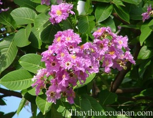

Tên khác:
Tên thường gọi: Còn gọi là bằng lang, bằng lăng (Miền nam), kwer (dân tộc Ma, Tây Nguyên), thao lao, truol (Rađê, Tây Nguyên).
Tên khoa học là Lagerstroemia calyculata Kurz
Họ khoa học: Thuộc họ Tử vi Lythraceae,
Tên Bằng lăng cũng như bằng lăng dùng chỉ nhiều cây thuộc cùng chi khác loài và thường thêm đuôi để chỉ nơi mọc hay giống một cây nào khác hoặc công dụng như bằng lăng ổi, bằng lăng chèo (vì gỗ đẻ làm bơi chèo), bằng lăng tía (hoa màu tía), bằng lăng trắng (hoa màu trắng)... Tên Lagerstriemia do Carl von Linné đặt cho từ năm 1759 để nhớ tới người bạn thân của mình, một công chức người Thuỵ Điển có tên Magnus Lagerstroem sinh năm 1691 ở Stettin và chết năm 1759 ở Gotterburg.
Cây bằng lăng
(Mô tả, hình ảnh cây bằng lăng, phân bố, thu hái, chế biến, thành phần hóa học, tác dụng dược lý...)

Mô tả
cây bằng lăng
Hầu hết mọi người chỉ biết tới bằng lăng là cây bóng mát, cây gỗ mà ít biết đến bằng lăng cũng là một cây thuốc quý. Cây gỗ cao 30-35m, thân gỗcó đường kính 40-80cm, cành mảnh khảnh, có lông mềm màu hung, lông hình sao, có ở ngọn, sau nhẵn và hình trụ. Lá mũi mác, thuôn dài, hẹp dần, tù ở gốc, dài 7-14cm, rộng 20-50mm dai, lúc đầu có lông hình sao, sau không lông ở phía trên, có nhiều lông mềm hơn ở mặt dưới, gân phụ 10-13 đôi. Cụm hoa mọc ở đỉnh với 6-9 hoa, nụ hình nón hay trái xoan, đài hình chuông, rất nhiều lông mềm, 6 thuỳ hình ba cạnh, cánh hoa 6, hình mắt chim, nhị có nhiều gần bằng nhau, nhị bầu xù xì có 5-6 ô, quả nang hình trứng dài 12mm, tut vào trong dài tới 1/3.
Phân bố, thu hái và chế biến bằng lăng
Mọc hoang dại hầu như ở khắp nước ta nhưng nhiều nhất ở Thanh Hoá, Nghệ Anm Hà Tĩnhm Quảng Bình, Quảng Trị, Thừa Thiên Huế, Gia Lai, Kontum, Đắc Lắc.
Còn thấy mọc ở Lào, Cămpuchia, Thái Lan, Miến Điện, Ấn Độ.
Chủ yếu là lấy gỗ loại gỗ hồng sắc. Nhân dân miền Nam thường dùng vỏ thân và lá dùng làm thuốc chữa bỏng, lỵ.
Bộ phận dùng làm thuốc
Vỏ, thân, lá
Thành phần hoá học bằng lăng
Hoàng Như Mai (1983) đã phân tích thấy:
Trong vỏ thân có ancaloit, flaconoit, axit hữu cơ, taminm saponinm cumarin và sterol. Trong đó tamin catechic và gallic chiếm 30,5% chủ yêu là biểu thị bằng axit malic 4,22%, tổng số đường 14,2% trong đó đường khử 13,2%, saccaroza 0,95%, chất nhầy 2,76%, gôm 3%, pectin 2,81%.
Trong lá và hoa cũng có những chất như trong vỏ thân nhưng với tỷ lệ thấp hơn: Tamin catechic và gallic 5,42% trong đó tamin catechic chiếm 76%, tamin gallic 24%, axit hữu cơ 2,83%, đường 5,8% trong đó đường khử 5,22%, saccaroza 0,57%, chỉ số bọt dưới 100, nhưng gôm chất nhầy cao hơn trong vỏ thân. Chất nhầy 3,25%, gôm 3,7%, pectin 6,51%.
Tác dụng dược lý bằng lăng
Cũng Hoàng Như Mai đã theo dõi thí nghiêm tác dụng kháng khuẩn của nước sá vỏ thân 3:1, lá và hoa 2:1 in vitro đối với nhiều nòi vi khuẩn hay gặp trên vết thương và gây bệnh đường ruột (Staphylococcus aurueus 209P, Proteus vulgaris Proteus, aeruginosa, Shigella typhi, B.subtilis) đều thấy có tác dụng kháng khuẩn với mức độ khác nhau. Thí nghiệm còn cho thấy tamin trong săng lể là một trong các thành phần có tác dụng kháng khuẩn của cây.
Tác dụng thể hiện trên nhiều nòi vi khuẩn đã kháng các kháng sinh thông thường (penixilin, sreptomyxin, tetracyclin) trong đó có Staphyllococcus aureus. So với một vài dược liệu khác (muồng trâu, chút chít, bạch hạc, nhựa chuối tiêu, trầu không) săng lẻ có tác dụng kháng khuẩn tương đối mạnh, nồng độ tối thiểu ức chế vi sinh vật phát triển tương đối thấp.
Bằng lăng còn có tác dụng đối với một số nấm gây bệnh ngoài da hay gặp (Candida albicans, Trichophyton rubrum, Trichophyton gypseum, Epidermophyton inguinale) so sánh vơi một vài dược liệu thường được dùng trong nhân dân để chữa hắc lào, Bằng lăng có tác dụng mạnh hơn.
Những thí nghiệm còn cho kết luận rằng những hoạt chất kháng khuẩn của Bằng lăng hoà tan tròn nước và chịu được nhiệt đun sôi tròn 2-3 giờ.
Cao lỏng Bằng lăng 2:1 có tác dụng ức chế phản ứng viêm do kaolin trên chân chuột, LD50 của vỏ Bằng lăng là 60g/kg.
Thí nghiệp thử độc tính bán cấp và trường diễn không thấy có ảnh hưởng gì đặc biệt.
Thử tác dụng điều trị bỏng thực nghiệm của Bằng lăng cho thấy cao lỏng vỏ Bằng lăng 3:1 tạo thành một màng mỏng chóng khô ở chỗ bôi, bản thân Bằng lăng lại có tác dụng kháng khuẩn nên hạn chế được rõ so với lô đối chứng nhưng cao Bằng lăng giúp cho quá trình liền sẹo nhanh và tôt hơn, không có trường hợp nào phát hiện thấy có sẹo xấu, lồi hoặc co.
Vị thuốc bằng lăng
(Công dụng, liều dùng, quy kinh, tính vị...)
Tính vị
Bằng lăng có vị chát, có tính làm săn da
Quy kinh:
Đang cập nhật
Liều dùng
Dùng ngoài liều không cố định
Dùng dưới dạng sắc 50-100g
Ứng dụng lâm sàng của vị thuốc bằng lăng
Chữa nấm ngoài da, hắc lào
Theo kinh nghiệm nhân dân, Bằng lăng được áp dụng chữa bệnh nấm ngoài da (dùng cồn săng lẻ 30%) bôi lên nơi tổn thương, ngày 2 lần, kết quả thu được rõ hơn là dùng cồn chút chít và bạch hạc.
Bằng lăng dùng điều trị lỵ trực khuẩn.
Ngày uống từ 10-15 viên, mỗi viên tương đương với 1,5g dược liệu khô. Thời gian hết khuẩn Shigilla ngắn hơn so với dùng cloroxit hay ganidan. Thời gian điều trị 10-15 ngày. Đối với trẻ em dưới 5 tuổi dùng với liều 3-6 viên/ngày. Dùng liền 5-7 ngày.
Điều trị bỏng từ bằng lăng
Dùng cao lỏng Bằng lăng hâm nóng thì tạo thành màng tốt dai bóng bám chắc vết thương nhưng vẫn gây xót. Nếu dùng bột Bằng lăng thì dễ nứt nẻ, bột bám không chắc bằng cao.
Chữa tiểu đường:
Hãm như trà: 50g lá già hoặc 50g quả khô hãm với 0,5 lít nước sôi. Uống ngày 4 - 6 cốc mỗi ngày để phòng và chữa bệnh tiểu đường.
Tham khảo
Theo kinh nghiệm của những người dân bản địa Philippines, cây bằng lăng có rất nhiều công dụng làm thuốc tùy theo từng bộ phận.
Vỏ cây và lá dùng làm thuốc hãm uống chữa bệnh tiêu chảy, hoa cũng dùng để chữa tiêu chảy đồng thời có tác dụng lợi tiểu rất có ích đối với người có bệnh về bàng quang.
Hạt có tác dụng an thần, gây ngủ, quả dùng để đắp ngoài trị những tổn thương loét đau ở miệng. Vỏ cây còn có tác dụng như thuốc nhuận tràng tự nhiên chữa bệnh táo bón.
Đặc biệt, lá của cây bằng lăng được người dân sử dụng để hãm trà uống có tác dụng chữa bệnh tiểu đường.
Những nghiên cứu hiện đại cũng chứng minh trong lá và quả già của bằng lăng có chứa nhiều acid corosolic có tác dụng làm giảm đường huyết khi nó vượt quá mức cho phép tương tự như tác dụng của insulin.
Phân tích ra cứ mỗi 20g lá và quả khô trong 100 cc nước có tác dụng tương đương với 6 - 7,7 đơn vị insulin.
Tuy nhiên, tác dụng hạ đường huyết tốt nhất là ở quả già và lá già của cây bằng lăng, còn lá non và hoa cũng có tác dụng nhưng chỉ có hiệu lực bằng 70% so với lá già và quả già.
Ngoài ra, các hợp chất tanin như ellagitannins, lagertannins, lagerstroemia trong lá bằng lăng cũng được chứng minh có tác dụng làm hạ đường huyết.
Cách dùng để chữa tiểu đường như sau: Hãm như trà: 50g lá già hoặc 50g quả khô hãm với 0,5 lít nước sôi. Uống ngày 4 - 6 cốc mỗi ngày để phòng và chữa bệnh tiểu đường.
Lá bằng lăng còn có tác dụng đối với nhiều căn bệnh khác như sau:
- Bệnh thừa cân, béo phì: Thành phần acid corosolic ngoài việc giảm đường huyết còn được chứng minh là giúp làm giảm béo phì. Chiết xuất lá bằng lăng có thể ngăn cản sự dồn đọng carbonhydrate đồng thời làm giảm sự hình thành mỡ.
Theo các nhà khoa học, những bệnh nhân tiểu đường type 2 có thể giảm 1 đến 2kg mỗi tuần nhờ sử dụng chiết xuất lá bằng lăng.
- Bệnh gout: Trong lá còn chứa valoneic acid dilactone (VAD) được sử dụng như chất ức chế xanthine oxidase làm giảm acid uric trong bệnh gout. Dịch chiết từ lá bằng lăng được chứng minh có tác dụng đối với bệnh gout tốt hơn thuốc.
- Bệnh đường tiết niệu: Lá bằng lăng chứa các thành phần kháng khuẩn, lợi tiểu rất tốt đối với người mắc bệnh đường tiết niệu, giúp phòng ngừa, chữa trị nhiễm khuẩn đường tiết niệu. Sử dụng lá bằng lăng già đun sôi trong nước và uống thay trà để có tác dụng này.
Chế độ ăn uống cho bệnh cao huyết áp
Tôi bị u não, đã mổ 3 lần mà khối u không hết, nhưng nhờ có...
Nơi mua bán vị thuốc Bằng lăng đạt chất lượng ở đâu?
Trước thực trạng thuốc đông dược kém chất lượng, nguồn gốc không rõ ràng,... xuất hiện tràn lan trên thị trường, làm ảnh hưởng tới hiệu quả điều trị cũng như ảnh hưởng tới sức khỏe của bệnh nhân. Việc lựa chọn những địa chỉ uy tín để mua thuốc đông dược là rất quan trọng và cần thiết. Vậy khách hàng có thể mua vị thuốc Bằng lăng ở đâu?
Bằng lăng là vị thuốc nam quý, được sử dụng rộng rãi trong YHCT. Hiện tại hầu hết các cửa hàng thuốc đông dược, phòng khám đông y, phòng chẩn trị YHCT... đều có bán vị thuốc này. Tuy nhiên người mua nên chọn những địa chỉ có uy tín, đảm bảo chất lượng, có giấy phép hoạt động để mua được vị thuốc đạt chất lượng.
Với mong muốn bệnh nhân được sử dụng những loại dược liệu đúng, chất lượng tốt, phòng khám Đông y Nguyễn Hữu Toàn không chỉ là đia chỉ khám chữa bệnh tin cậy, uy tín chất lượng mà còn cung cấp cho khách hàng những vị thuốc đông y (thuốc nam, thuốc bắc) đúng, chuẩn, đạt chuẩn chất lượng. Các vị thuốc có trong tiêu chuẩn Dược điển Việt Nam đều được nghành y tế kiểm nghiệm đạt chất lượng tiêu chuẩn.
Vị thuốc Bằng lăng được bán tại Phòng khám là thuốc đã được bào chế theo Tiêu chuẩn NHT.
Giá bán vị thuốc Bằng lăng tại Phòng khám Đông y Nguyễn Hữu Toàn: Gọi 18006834 để biết chi tiết
Tùy theo thời điểm giá bán có thể thay đổi.
+ Khách hàng có thể mua trực tiếp tại địa chỉ phòng khám: Cơ sở 1: Số 481 lô 22 Lê Hồng Phong, Phường Gia Viên, Thành phố Hải Phòng
+ Mua trực tuyến: Thuốc được chuyển qua đường bưu điện. Khi nhận được thuốc khách hàng thanh toán tiền COD.
Tag: cay bang lang, vi thuoc bang lang, cong dung bang lang, Hinh anh cay bang lang, Tac dung bang lang, Thuoc nam
Thaythuoccuaban.com Tổng hợp
*************************